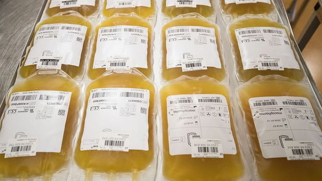
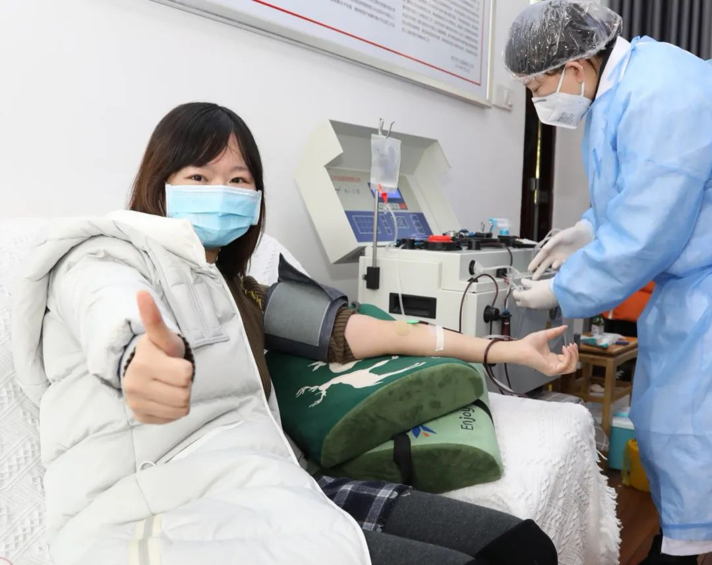
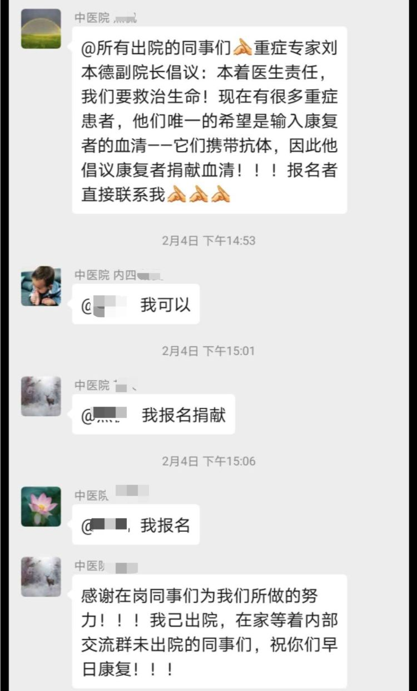
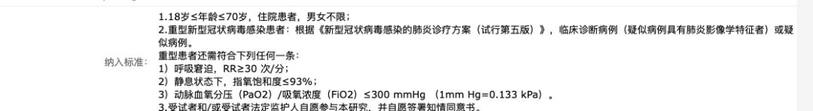
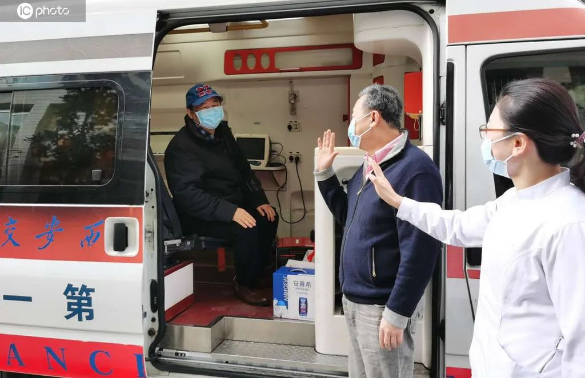

血浆治疗法：疗效待定，可为寻找抗体和疫苗打基础
原文链接 备份链接 *************▲ *************江夏区第一人民医院(协和江南医院)副院长刘本德。 （南方周末记者 崔慧莹/图） 全文共3875字，阅读大约需要8分钟。 2020年2月19日公布的第六版诊疗方 …


摘要：2月15日，武汉江夏区第一人民医院走出一位特殊的康复者。出院六天前她刚接受了血浆治疗，一度CT显示严重阴影的肺部，接受血浆治疗后逐步好转。她是全国第一例接受血浆治疗的新型冠状病毒肺炎患者。
特效药和疫苗到来之前，与新型冠状病毒的对抗始终是难题。在个别患者身上取得成效后，古老的血浆疗法再次成为热门话题，被寄予全新希望。
据上海瑞金医院专家团队披露，武汉10位重症患者参与血浆治疗后，其炎症指标和肺部影像学检查结果在短期内都得到了改善。2月19日，国家卫健委公布的《新型冠状病毒肺炎诊疗方案(试行第六版)》也细化了血浆疗法的应用。
尽管已初显成效，但多位学者和临床医生也提醒，血浆并非“仙药”，不是人人有效，还存在一些风险，需要更充分的研究，才能更好评价其临床价值。
目前，在投入诊疗的同时，多项临床试验正在开展。而在仍有大量重症患者的情况下，缺少足够的康复者血浆，也是摆在面前的现实问题。
文 | 周航
编辑 | 陶若谷
应急的血浆
和平常献血不同，血浆抽取需要二三十分钟，经过专门的采浆设备后，血细胞等又送回了吴芬体内，最后保留淡黄色的血浆，远看就像一袋啤酒。
吴芬是最早一批捐献血浆的康复者之一。新型冠状病毒不知何时开始在她工作的江夏区中医医院流行开，有同事感染后，医院组织了所有人拍CT，1月17日她拍CT后也住了院，治疗16天后康复。
2月5日捐血浆时，工作人员告诉她，项目仍处于立项研究阶段，“把我们的血浆拿去做研究，提取出来，看到底有没有抗体。”
事实证明部分患者体内抗体确实存在，而且有效——2月13日，看到新闻上武汉金银潭医院院长张定宇在湖北省政府新闻发布会公开呼吁康复者捐血浆，吴芬激动了一晚上。
血浆疗法也就此闯入大众视野。
血浆疗法全称恢复期血浆治疗，指的是抽取康复者血浆——这些血浆含有能中和病毒的抗体——经制备后输入患者体内，帮助中和病毒，恢复健康。
早在100多年前，德国生理学家冯·贝林就利用马的免疫血浆，治疗白喉。此后，血浆疗法还被用于猩红热、麻疹、黄热病、百日咳等传染病治疗中。但随着各类特效药、疫苗的研发，血浆治疗逐渐淡出视野。
近二十多年，每当新发传染病如SARS、埃博拉病毒流行，缺乏特效药和疫苗时，血浆疗法便会登场，成为抢救危重症患者的选项。
2003年抗击“非典”，解放军302医院教授姜素椿感染SARS病毒后，冒着风险用广州康复患者的血浆给自己注射，据《解放军报》报道，“病情很快得到遏制。同时，医院配合其它药物进行治疗，他的身体很快得到恢复。”
埃博拉病毒爆发后，世卫组织也推荐优先使用来源于已治愈患者的恢复期血浆来治疗。不过，MedSci(梅斯医学)刊登的一项研究显示，84名患者接受恢复期血浆治疗后，并不能显著改善生存率。
事实上，因为始终欠缺大规模的临床试验数据，很多专业人士对血浆疗法的态度有所保留。
“治愈者的血浆用于临床治疗都只有小样本的数据。” 武汉市第一医院输血科主任王顺接受媒体采访时说，血浆疗法确实有一定治疗作用，但从未被列入正式治疗方法，在情况危机时会启用，是针对危重症患者采取的“没有办法的办法”。
如今正是这样的危机时刻。
新型冠状病毒来势凶猛。一些轻型患者会病情突然加剧，转为重型或危重型，体内掀起”炎症风暴”，昂贵的ECOM（人工膜肺）技术也回天无术。疫苗研发仍需时日，瑞德西韦、磷酸氯喹等被寄予厚望的药物还在试验阶段，历史上发挥过作用的血浆疗法成了应急之举。
最早在临床实践的，是武汉一座区级医院——江夏区第一人民医院。2月9日，第一位患者在这里接受血浆治疗，之后有至少六位患者在该医院注入了康复者捐献的血浆。
这是家位于武汉郊区的医院，疫情早期涌入大量城区医院未接收的患者，在非定点医院中收治病人最多。
该院副院长刘本德向媒体回忆，早在1月20日，他便提出血浆疗法，并和多家单位着手相关工作，目的很简单，“就是希望能多救几个人。”
刘本德对媒体多次强调，江夏第一人民医院开展血浆治疗，并不是临床试验，而是一种应用探索。
探索取得了初步效果。刘本德介绍，患者接受治疗12至24小时后，血氧饱和度明显上升，主要炎症指标明显下降，淋巴细胞比例上升，重点指标全面向好，临床体征和症状均开始好转。
在武汉，江夏区第一人民医院之后，最早定点收治重症患者的金银潭医院也拿到几份血浆，治疗效果同样不错。2月14日接受央视采访时，院长张定宇表示，该院康复者的血浆已经使4位重症患者的病情好转。

2月5日，吴芬和同事到医院捐献血浆。受访者供图
康复者血浆如何变成“抗病毒的药” ？
对于血浆疗法，免疫学家最有发言权。在免疫学里，这属于”被动免疫”。
人体有着强大的免疫系统，对于新型冠状病毒的侵入，体内能产生特异性抗体，迅速识别并捕捉病毒，与之结合，形成所谓的“免疫复合物”。
免疫复合物形成后，就可以激活体内的补体系统（血液中一套蛋白质形成的保护体系，用于阻止细菌和病毒的入侵）清除病毒，也可以被体内的吞噬细胞捕捉，使病毒在吞噬细胞内被分解清除。
血浆成分复杂，可能潜在危险病原，这是血浆疗法最直接的风险，好在先进的制备技术正在应对这一问题。
在武汉，江夏区第一人民医院得以率先尝试血浆疗法，离不开同在江夏区的中国生物武汉生物制品研究所和武汉病毒研究院的支持。这两家单位距医院不过十分钟车程，前者隶属中国生物公司，主要从事生物制品、血液制品的制造和销售，后者则是国内顶级的病毒研究所。
武汉病毒研究所石正丽团队于1月20日提交《自然》杂志的论文显示，患者体内分离出抗体，显示出在低血清稀释度下中和病毒的潜力。
在恢复期中，康复者血浆仍含有这类中和抗体。对自身免疫力不足的患者而言，输注这些血浆便相当于引入”援军”。
抽取后的血浆要经历大约7天的筛选、制备过程，才会交由医院临床使用。
血浆会先送到武汉病毒研究所分析，对有害成分灭活处理，再送到武汉生物制品研究所综合检测。据刘本德向媒体介绍，除了常规的乙肝、丙肝、艾滋、梅毒等指标检测，还要确保没有病毒残留，因此会把血浆送入上述两家单位，将病毒滴度过高的血浆筛选掉，符合要求的再进行灭活等处理制备。
另一个关键步骤是检测抗体滴度。抗体滴度太低意味着有效性不足，一定数值以上才会最终应用于临床。
经过前期试验，2月13日，中国生物宣布，康复者血浆含有高效价新冠病毒特异性抗体的血浆。最早一批捐献者也来自江夏区。除了江夏区第一人民医院，吴芬所在的江夏区中医医院也参与其中。
2月4日下午，院长在微信群转发江夏第一人民医院的号召，鼓励同事捐献血浆，吴芬也加入报名。看到招募献血者的消息，她的反应几乎是职业性的，“终于能够为抗疫做点什么了。”

吴芬所在医院号召捐献血浆。
不过，吴芬不知道自己的血浆用在了谁身上。事实上，她都不知道自己的血浆有没有用。
不是所有康复者血浆最后都会用于临床。据刘本德介绍，首批19位康复者捐赠的6600ml血浆，最后有3000ml应用于临床。
最后，这些血浆经患者同意后输入他们体内——血浆的输注一般要求ABO血型同型，特殊情况也可以相容型输注，即AB型血浆可输给任何人，而O型血可以接收任何血型的血浆。
每位患者一般会输入至少200ml血浆，按照康复者单次捐献400ml血浆计算，这意味着理论上可供两人使用。
风险和希望并存
2月13日晚，张定宇在湖北省发布会上公开呼吁康复者捐献血浆后，血浆治疗迅速引起舆论反响。除武汉外，血浆疗法已在全国铺开。2月14日，广东迎来首位血浆捐献者，一个19岁的小伙，早在2月2日，他就签下捐献承诺书。
同一天，上海市公共卫生临床中心28位患者治愈出院，其中6位愿意捐献血浆，14天隔离观察期满就可捐献。
“有些重症患者，多种措施上去疗效仍不理想，为了进一步提高救治成功率，大家就会尝试包括血浆治疗在内各种可能的治疗措施。” 上海市公共卫生临床中心医务部主任沈银忠说。
“血浆疗法并不稀奇”，沈银忠解释，之所以上海近期才启动，主要近期陆续有新冠肺炎患者治愈出院，恢复期血浆治疗才成为可能。
多地进度不一的自发推进之外，由上而下的推广也开始了。
2月14日，国家卫健委办公厅发函，要求各地卫健部门和医疗机构充分认识救治重症、危重症患者的紧迫性，统筹组织好辖区内的血浆治疗工作。
同时发放的《新冠肺炎康复者恢复期血浆临床治疗方案（试行第一版）》明确了各方“任务”：医院做好动员康复者捐献血浆工作，血液制品生产单位提供设备和技术支持，会同血液中心或血站采集、制备血浆。
方案也明确了一些技术操作细节，包括有条件下可以检测抗体滴度，建议血清IgG抗体滴度不低于160。
该方案下发数天之后，2月19日，国家卫健委发布的试行第六版《诊疗方案》细化了血浆疗法的提法，明确建议适用于病情进展较快、重型和危重型患者三种患者。（注：1月30日，第四版《诊疗方案》针对重型、危重型患者，提出“有条件情况下可考虑恢复期血浆治疗”。2月5日，第五版更新为“可考虑恢复期血浆治疗。” ）
“这说明康复者血浆疗法可作为重型和危重型新冠肺炎治疗措施之一。” 沈银忠说，武汉等地的经验也可给其他地方参考，就上海而言，“临床上还会不断观察疗效和安全性，不断积累和总结经验。” 目前，上海仍采用多学科合作综合的治疗手段，如吸氧、抗病毒、抗感染、重症支持治疗等措施。
不少业内人士也表达了类似的谨慎态度，尽管初期已有一些成功案例，但按照循证医学的标准，血浆疗法的效果仍需更大规模临床试验来验证。

血浆的样子。
北京协和医学院免疫学系教授黄波对媒体谈到抗体的复杂性，康复者体内针对病毒不仅产生中和性抗体，还产生多种非中和性抗体。
其中，中和性抗体与病毒结合阻止病毒进入细胞。其他非中和性抗体则能结合病毒表面的蛋白质，再通过巨噬细胞将病毒吞入。
但对于后一种机制而言，感染中后期，情况可能会发生变化，此时巨噬细胞机能可能已经降低，病毒或能逃过攻击，反而在巨噬细胞中存活复制，让巨噬细胞迅速激活释放“炎症因子”，从而促进人体的“炎症风暴”，加重患者肺部损伤。
这也是四川省人民医院ICU主任黄晓波正面临的难题：存在治疗风险的情况下，如何挑选合适的患者接受血浆治疗？
太轻的病人不需要，太重的病人他也担心诱导过度的炎症反应，“真是一个度的把握。” 黄晓波正在武汉省红十字会医院支援，他的团队不仅参与血浆治疗，还正在参与由中国医学科学院输血研究所（简称“输血研究所”）主导的一项临床试验。
2月12日，输血研究所申请注册了一项血浆疗法针对重症患者的临床应用研究，计划设置150人的实验组，150人的对照组，在协和医院、武汉市红十字会医院等地实施。
黄晓波表示，相比观察一组病人的回顾性研究，设置对照组的随机性研究更加科学。“前者影响因素比较多，如果选的病人（症状）比较轻，可能会夸大（血浆疗法的）效果。”
他希望患者不要将血浆视作“仙药”，“指望血浆疗法把所有人救回来是不切实际的，我们首先说它是靠谱的，但我们对这个病毒认识时间太短，所以对它的认识实际上还非常肤浅。” 黄晓波说。
早在1月28日，输血研究所两位研究人员便赴武汉开展前期工作。其团队一位负责人表示，研究已发现，恢复期血浆不是适用于所有患者，“我们发现它也是有严格的适应症的。”
“有些人可以用，有些人不能用，对某些人来讲可能效果非常好，对某些人来讲可能是没有效果的。对于某些人来讲，还有可能是有害的。所以它是属于研究阶段，里面的风险和利益是并存的。” 该负责人说。
金银潭医院和武汉血液制品研究公司也正在开展类似的临床研究。中国临床试验中心网站显示，2月19日，这两家单位申请注册了一项评价血浆疗法有效性及安全性的随机、双盲、平行对照、单中心临床研究。

中国临床试验注册中心网站显示，2月19日，金银潭医院和武汉血液制品有限公司申请注册关于血浆治疗的临床试验，纳入标准为重症患者。
研究的具体设计是，50人注射病毒灭活血浆，另外50人输入普通血浆进行对照。一位参与研究的学者说，整个团队都在通宵推进这项工作。
纳入研究范围的是重型感染患者，危重患者则排除在外。这与金银潭医院院长张定宇2月16日对媒体讲述的血浆治疗适用范围一致—— 血浆疗法用于重症病人，看上去早期一些效果还不错，似能阻止他们继续滑向危重症， “但对危重症病人，治疗效果还有待评价。”
目前的武汉，在救治重症患者一线，血浆治疗被视作必要选择。“风险远远小于收益。” 张定宇说。
需要更多康复者血浆
当下，血浆治疗的推行还面临最重要的一个现实问题，缺少足够多的康复者捐献血浆。
黄晓波说，医院不少护士愿意捐献，但普通患者还是不多，”我们宣传了几个，都说要去跟家人商量一下，也还是有些顾虑。”
事实上，最早一批捐献者都来自医院。吴芬报名的第二天上午，就和9位同事到医院，一度病情很重的护士长都来了。血站的人员带着设备上门采集，因为只带了8套一次性耗材，还有两位还是第二天自行去献血点献的。
吴芬曾经献过两次血，都晕倒了，这次她隐瞒了历史。轮到她是第二个，针管扎进皮肤，她转过头和同事聊天，缓解紧张感。到了原定的200ml，她又要求多抽一点，一共抽了300ml。
后来，所有女性都抽了300ml。男性标准是400ml，吴芬说，尽管他们也要求多献，但工作人员拒绝了，“毕竟刚出院”。
吴芬知道，这种成分献血短期内可恢复，对人体影响很小，不必有太多顾虑。重要的是她可能可以帮到别人。
截止2月20日，已有超过100位康复者捐献血浆，为240个危重病人抢救。科技部副部长徐南平在政府发布会上介绍，承担项目的公司已经组织20个采浆团队到达11个省份，而此前国家卫健委已发文要求各地卫生系统支持这项工作。
不过，相比患者的庞大需求，目前血浆依旧紧俏。
2月19日，看到卫健委第六版《诊疗方案》后，刘正也发出了求助，他的岳父已经在金银潭医院重症监护室躺了二十天，曾经经历过一次抢救，情况危重，需要O型血浆。
这几天，刘正给医院和血站打了电话，医生反馈的是，能不能用要专家团队判断。血站也回复，可以沟通和要求点对点捐献，但找到相匹配的捐献者后，经过若干程序筛查生物检验确定是有效血浆后，才能由专家组综合评定是否使用。
“20号给医生打了电话，说血浆是治疗的一个治疗手段，更多还是综合治疗。” 刘正说。
和很多求助者一样，他也看到专业人士强调血浆治疗并非“仙药”，对于个体尤其危重患者而言，依旧有风险。但这不影响他把血浆视作全新的希望，“除了找血浆，别的忙也帮不上。”
等待血浆的过程里，岳父的情况不算乐观，连着几天没回微信，因为偶尔狂躁不安，一直在打镇静剂，处于昏睡状态。
刘正和家人找遍了亲戚、朋友，志愿者也纷纷帮忙。但直到2月24日晚上岳父去世，还是没找到合适的愿意捐献血浆的O型康复者。
社交平台上，越来越多的人发出血浆求助，其中不乏“熊猫血”的求助者，即便概率甚低，依旧在努力寻觅匹配者。

2月22日上午，西安交大一附院首例治愈出院的新冠肺炎患者杜先生，再次回到医院捐献血浆。
（文中刘正为化名）
后台回复”读者群”, 加入更多讨论

小昼
长按二维码向我转账
受苹果公司新规定影响，微信 iOS 版的赞赏功能被关闭，可通过二维码转账支持公众号。
原文链接 备份链接 *************▲ *************江夏区第一人民医院(协和江南医院)副院长刘本德。 （南方周末记者 崔慧莹/图） 全文共3875字，阅读大约需要8分钟。 2020年2月19日公布的第六版诊疗方 …
原文链接 备份链接 经济观察网 记者 瞿依贤 2月13日晚间，中国医药集团下属公司中国生物宣布：在武汉地区实施了新冠肺炎康复者血浆采集，已成功制备出用于临床治疗的特免血浆，目前超过10名危重病人接受了新冠特免血浆治疗，患者接受治疗12 …
原文链接 备份链接 大范围推广仍需进一步临床试验的评估2月13日晚，在湖北省新冠疫情新闻发布会上，武汉市金银潭医院院长张定宇表示，康复后的患者体内有大量的中和抗体来抵抗新冠病毒。他呼吁康复期患者捐献血浆，共同拯救还在与病魔作斗争的病 …
原文链接 备份链接 2 月 13 日晚间，国药中国生物宣布了一项重要进展，在新冠肺炎康复者血浆中已检测出高效价病毒中和抗体，实验证明，能够有效杀死新冠病毒，“我们用康复者特异血浆临床治疗 11 例危重病人，治疗效果显著。” 中国生物官方宣 …
原文链接 备份链接 湖北省新冠肺炎疫情防控指挥部13日21时召开新闻发布会，邀请中央指导组医疗救治组专家、北京朝阳医院副院长童朝晖、广州支援武汉协和医院医疗队队长、广州医科大学附属第一医院副院长张挪富、武汉金银潭医院院长张定宇等介绍武汉 …